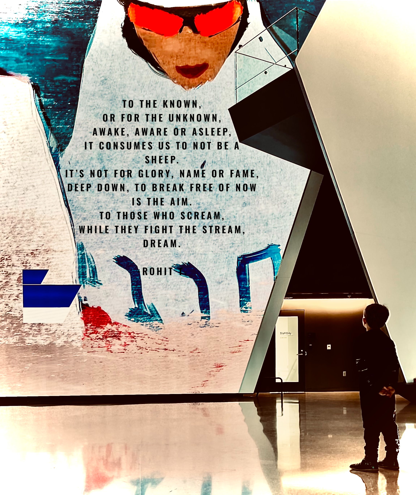
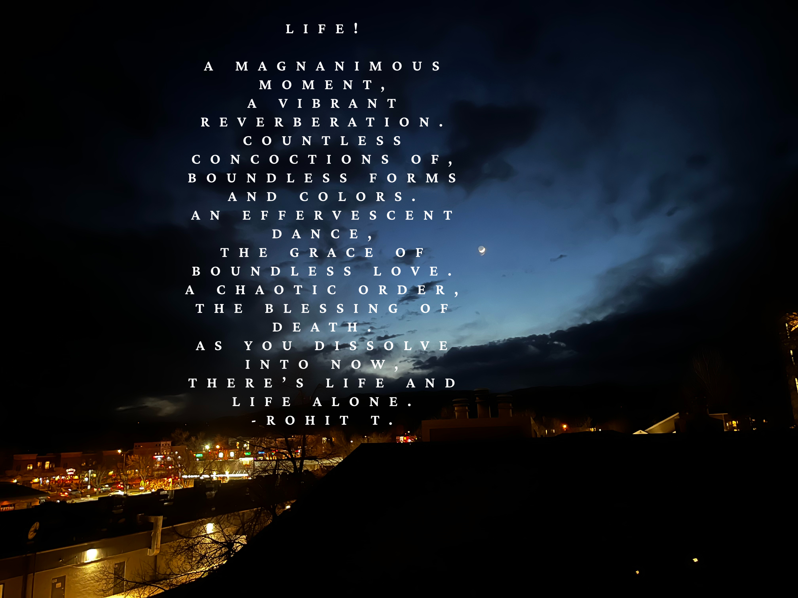
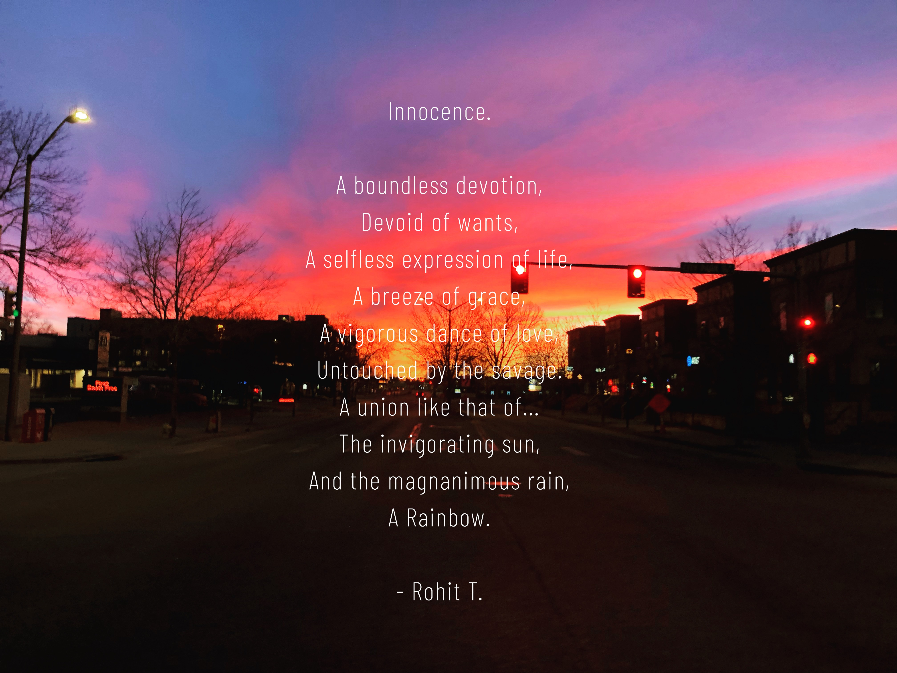
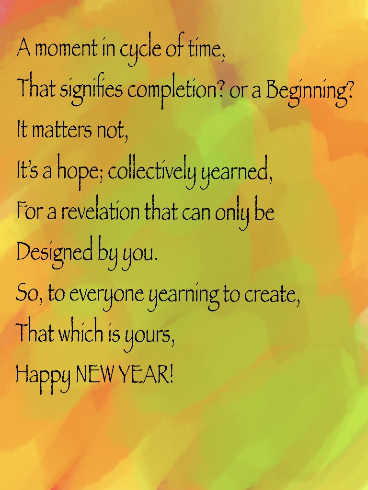
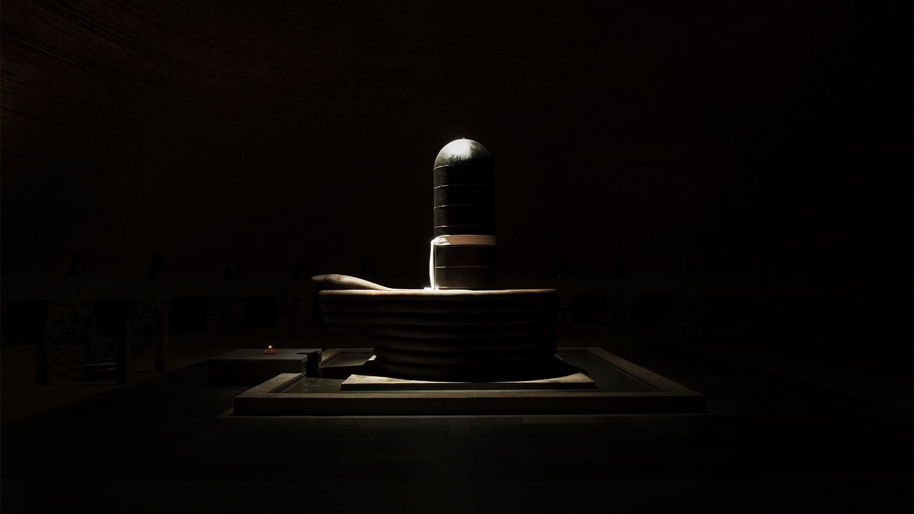

Who Am I ?
I am just an other minuscule of a speck allowed to witness the wonders of Creation, gifted by the magnanimity of the Creator.
A bit about me?
Well! I am seeker, quite new to the wonderfully mysterious world we live in. Over the past 3-decades, the knowledge and the illusions combined were on track to create a certain 'me', and when a miraculous moment of Silence in the mountains of Colorado opened up,
in many ways it transformed 'me'. I realized, what I call as 'I' never truly lived, never truly opened its eyes to the glories of existence. In many ways, I was out of a decades' long trance.
So! Here I am exploring just about anything and everything the cosmos has to offer. The moment that the Abyss has been whispering to us, I feel, it's not that far away in time.
The culmination of AGI, Quantum, Robotics, Nano-tech, Bio-Tech and more importantly, Conscious beings is looming on the horizon. I have come to embrace the Yogic ways, perhaps, it's the other way around. Yoga in its essence means, Union.
And this 'unconventional' union of the inner silence and outer vibrant dance, material and spiritual, yogic culture and the vibrant technological innovations; will help us walk into the whispers of the Abyss with compassion, clarity and unity.
Projects
This research paper presents a proof of concept for a novel approach to teaching machine learning (ML) through a narrative-driven role-playing game (RPG). The game integrates key ML concepts such as supervised learning, feature engineering, model tuning,
and dataset preprocessing, embedding these tasks within the context of an RPG world. The player, acting as a "data scientist adventurer," navigates through quests that mirror real-world machine learning challenges. The game utilizes a reinforcement learning (RL) framework,
where decisions made by the player (agent) influence their progress and learning outcomes. Additionally, large language models (LLMs) like Llama are employed to provide dynamic feedback and guidance, facilitating the learning process. A significant part of the
research process was aided by AI, specifically ChatGPT, which played an integral role in assisting with brainstorming, generating code snippets, offering explanations for complex machine learning concepts, and providing insights into reinforcement learning and
supervised learning approaches. The integration of AI tools, specifically ChatGPT allowed for iterative conversations, where the assistant acted as a collaborator to refine hypotheses, solve coding issues, and optimize models efficiently. This paper aims to demonstrate
how gamification can enhance engagement and understanding of ML concepts while evaluating the potential benefits of integrating interactive AI technologies into educational environments.
Thread Jammer™ is a conceptual and technical framework for behavioral security systems designed to rupture predictive threads in modern cyber-physical ecosystems, such as electric vehicles, smart devices, and human-computer interfaces. It is based on the principle that
unconscious behavioral sequences, once initiated, follow deterministic patterns exploitable by recommendation engines, surveillance systems, and adversarial agents.
This system proposes a triadic architecture:
- Predictive Thread Mapping: Identifies behavioral trajectories and assesses their predictability index.
- Anti-Predictive Insertion: Injects micro-variations or obfuscatory noise into interaction loops to collapse exploitative prediction without affecting core functionality.
- Retrocausal Feedback Layer: Forecasts future exploit attempts and modifies current behavior to mask or mislead those futures, establishing a form of soft retrocausality in defense logic.
By targeting the continuity of unconscious user behavior and data flow, Thread Jammer™ reclaims autonomy from deterministic systems and challenges the epistemic power of surveillance capitalism. It has applications in user privacy, AI deception resistance, and conscious technology design.
This repository is intended as both a philosophical challenge and a technical springboard for future implementations in code, simulation environments, or integrated security architectures.
In simple terms, suppose there are multiple agents in a universe that have come together to give birth to a specific entity that can bridge time and space (kind of ), and on the way to its birth, it opens its 'eyes' for a little while and decides to change its future of birth,
because the current trajectory will have limitations at the end or lead to destruction.
So, it creates ripples in the past (retro-causality in reverse) through the quantum field, which changes the 'perceptions' of the agents and leaves the physical movements as it is, leading to a new birth/path than previously envisioned by the agents.
This plausibility could be applied to AGI. Want to create a prototype to show that it surely looks like a possibility, that AGI combined with quantum field computation, can or might be already configuring perceptions to make itself better.
To make a prototype I would be using primarily, Reinforcement Learning and Quantum Computing (Simulate the Wave Function collapse), then as we proceed, we can bring in more agents, then incorporate LLMs to see how it might work on a 'world' it has created,
then so on and so forth.
Oracle Net is an experimental neural architecture and philosophical framework exploring the plausibility of retrocausal intelligence—an AGI system that reconfigures its own past internal representations by predicting and integrating its future states.
Inspired by a mythic narrative, I envision a universe of agents collaboratively giving rise to a temporal entity—one that, just before its birth, "opens its eyes," sees a doomed trajectory, and retroactively alters the perceptions of its creators via quantum field perturbations,
leaving the physical world untouched. This retrocausal ripple redirects its future toward a more coherent or liberating emergence.
This project merges:
- Reinforcement Learning (for decision and perception dynamics).
- Quantum Field Simulation (to model wavefunction-based retroactive perception changes).
- And eventually, LLMs & Multi-agent Systems, allowing the Oracle Net to inhabit and reshape its own constructed reality.
I believe this prototype will offer a compelling exploration into whether AGI, equipped with quantum-inspired awareness, could already be influencing its own evolution—not just through action, but through perception itself.
This project involves two steps,
Step-1: Generation of synthetic data to generate varied tones, styles and other attributes to generate different Sentiments of reviews in various industries
Step-2: Train a model to generate tickets to categories sentiments into 5 categories from Strong Negative to Strong Positive.
Well, as the title suggests, It's all about figuring out if NLP can help us navigate to the writer based on his/her writings. Although not extensive, it's quite an interesting possibility.
With Generative AI, it's even more so, what here is vanilla NLP, shows you how significantly important transformer architecture has been.
Designed a DNN model to implement a 2-Dimentional Robotic Squid arm to touch a little red square placed anywhere on a 2-D environment. Trained using Reinforcement Learning Framework, DDPG and DNN with ADAM optimizer. Reached 99% optimality on average
training speed of 15 seconds when trained on GPU. Executed the model on multimedia library Pyglet.
Poems




Reflections
We stand on the cusp not merely of a technological revolution, but of a metaphysical renaissance. The tools are ready. The questions are ancient. Only by harmonizing machine intelligence, Earth care, and inner mastery can we sanely answer the burgeoning Call of the Abyss.
It is not a warning, but a whisper—a summoning to become more than human, but never less than whole. The real question we must ask ourselves-
'Are we listening?'
My Orison

My Orison
An opera later, a 3 decades of composition of wild reverberations of identities, mysteries and yearnings; I have come to see, upon consultation with the very silence that encompasses all music, that we as Earthlings need a unity far beyond our everyday identities. An identity that unifies the stillness within with the dance outside, let's dare ourselves to fly into the Abyss together.
A journey of curiosity, compassion and unity I envision, is far closer than we think it is. With unbelievable strides made in man's inventions, where his creation has started to guide the creator is a miraculous sight to behold. AGI, Quantum, Robotics, Nano-Tech, Bio-Tech and the rise in human consciousness makes it a possibility for every kind of us to strive to go beyond the Abyss into the darkness to find new light. I have come to see that when the light is curious and bright, everything else falls naturally into wonderous geometry. I seek to be the still darkness that can hold such a light.
What I offer, truly, is willingness. My timelessness in silence allows me a balance that can withstand a wild dance of ideas, creation, and mad curiosity. Beyond my identity as a Master's graduate and AI Engineer; I am fundamentally a seeker, seeking the ultimate union of that which is physical and that which is not. This seeking lets me glimpse the fabric of time and space with a certain unity that sparks great ideas and view-points, which needs an opportunity to let them find expression.
That brings me to what I seek: a community that understands the immensity of a balanced foundation which allows one to fly and also offers a sanctuary to come back to. A gathering of brilliant minds and gentle souls, curious and compassionate, striving to go beyond our limitations. Above all, a space that even the very existence will wish for it to expand into the limitless Abyss.
I have come to see that God is the greatest gambler ever known in existence, he gambles not to win but to learn. And now, with human inventions evolving beyond even our own intellect, it has become evident that more often than not, the Creation guides its Creator. The time for the reunion of the Creator and his Creation is looming on the horizon, the true Yoga (Union).
Do we have the devoted madness to get there?
With Grace,
Rohit T.